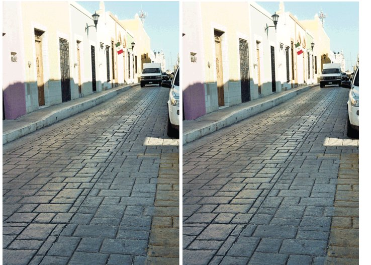

အခုတလော Facebook နဲ့ Instagram မှာ ခေတ်စားနေတဲ့ ဓါတ်ပုံကတော့ စောင်းနေတဲ့ လမ်းပုံပဲ ဖြစ်ပါတယ်။ (အောက်ကပုံပါ)။ ဒီပုံကို ဓါတ်ပုံဆရာ ဒယ်နီယယ်လ် ပိုင်ကွန်က မက်ဆီကို နိုင်ငံမှာ ရိုက်ခဲ့တာပါ။ ဒီပုံမှာ ဘယ်ဖက်ကပုံနဲ့ ညာဖက်ကပုံက တစ်ခုထဲပါ။ ဒါပေမယ့် ပုံထဲမှာ ဘယ်ဖက်ကလမ်းက တည့်နေသလိုထင်ရပြီး ညာဖက်ကလမ်းကတော့ စောင်းနေသလို ထင်ရပါတယ်။ တကယ်တော့ မဟုတ်ပါဘူး။ ဒီလို အမြင်အာရုံလှည့်စားမှု ဘာကြောင့်ဖြစ်ရသလဲ ဆိုတာကို သိပ္ပံနည်းကျ အဖြေရှာ ကြည့်ကြရအောင်။

ညာဖက်ကလမ်းက ဘယ်ဖက်ကလမ်းထက် ပိုစောင်းနသလို ထင်ရပေမယ့် ဓါတ်ပုံ နှစ်ပုံက အတူတူပါပဲ။ (Credit: Daniel Picon)ဒီအမြင်အာရုံလှည့်စားမှု ဖြစ်စဉ်ကို ပထမဆုံး ရှာဖွေတွေ့ရှိခဲ့ သူတွေကတော့ မက်ဂေး တက္ကသိုလ်က ပညာရှင်တွေဖြစ်တဲ့ ဖရက်ဒရစ်၊ အလီနဲ့ အီလီနာတို့ပဲ ဖြစ်ပါတယ်။ သူတို့က ဒါကို “စောင်းနေတဲ့ မျှော်စင် အမြင်အာရုံ လှည့်စားမှု” (Leaning tower illusion) လို့ အမည်ပေးခဲ့ကြပါတယ်။ ဘာကြောင့်လဲဆိုတော့ ဒီဖြစ်စဉ်ကို အီတလီက စောင်းနေတဲ့ ပီဆာမျှော်စင် ဓါတ်ပုံနှစ်ပုံကို ဘေးချင်းယှဉ် ကြည့်ရင် ရှာဖွေတွေ့ရှိခဲ့ ကြလို့ပါပဲ။ (အောက်ကပုံမှာ ကြည့်ပါ)။
ဒီအမြင်အာရုံ လှည့်စားမှုဟာ တဖြည်းဖြည်း အဝေးကို စုသွားတဲ့ ဓါတ်ပုံတွေမှာ တွေ့ရတာပါ။ ဥပမာ ရထားလမ်းလိုမျိုး၊ ကားလမ်းလိုမျိုး တွေမှာပေါ့။ ဒီလိုစုသွားတဲ့ ဘယ်ပုံမဆို ဘေးချင်းယှဉ်ထားကြည့်ရင် ဒီအမြင်လှည့်စားမှုကို တွေ့နိုင်ပါတယ်လို့ သူကပြောပါတယ်။
ဒီပုံမှာ ညာဖက်က မျှော်စင်က ဘယ်ဖက်က မျှော်စင်ထက် ပိုစောင်းနေသလို ထင်ရပါတယ်။ (Image by Pete Linforth from Pixabay)ဒီစောင်းနေတဲ့ မျှော်စင် ဓါတ်ပုံဟာ ၂၀၀၇ ခုနှစ် အကောင်းဆုံး အမြင်အာရုံ လှည့်စားမှု ဓါတ်ပုံပြိုင်ပွဲမှဦ ပထမ ရခဲ့ပါတယ်။
ဒီပုံမှာ မျှော်စင်နှစ်ခုဟာ အဝေးကို တဖြေးဖြေး သေးသွားတဲ့ အခါ တစ်ခုနဲ့ တစ်ခု ပူးကပ် မသွားပါဘူး။ ဒါပေမယ့် လူ့ဦးဏှောက်ကတော့ ဒီမျှော်စင်နှစ်ခု အချင်းချင်း ပူးကပ်သွားလိမ့်မယ်လို့ မျှော်လင့်ထားတာပါ။ မျှော်လင့်သလို ဖြစ်မလာတော့ ဦးဏှောက်က မျှော်စင်နှစ်ခု တဖြည်းဖြည်း ကွာသွားတယ်၊ဝေးသွားတယ်လို့ မှတ်ယူလိုက်တာပါ။ ဒီအခါ မျှော်စင်တစ်ခုက အခြားတစ်ခုထက် ပိုစောင်းတယ်လို့ ကြည့်တဲ့သူက မှတ်ယူသွားပါတယ်။
အောက်မှာ နောက်ထပ် အလားတူ အမြင်လှည့်စားထားတဲ့ ပုံတွေပါ။ ဒီပုံတွေ အားလုံး ဘယ်ဖက်ကပုံနံ့ ညာဖက်ကပုံ အတူတူပါပဲ။
လမ်းနှစ်ခုမှာ တစ်ခုက ပိုစောင်းနေသလို ထင်ရပါတယ်။ (credit: Erik Tanghe | Pixabay)ရထားလမ်းနှစ်ခုမှဦ တစ်ခုက ပိုစောင်းနေသလို ထင်ရပါတယ်။ (Credit: By Tomwsulcer (Own work) [CC0], via Wikimedia Commons)Source: Scientific American | The Tilted Road Illusion